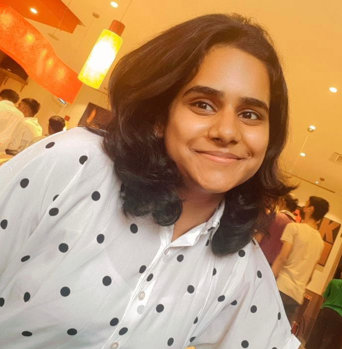

Sushma Rajasekaran

About Me
Passionate Full Stack Developer currently pursuing a postgraduate diploma in Full Stack Development with a keen interest in specializing in UI/UX. As a creative thinker who enjoys pushing the boundaries of design, I am committed to crafting seamless and user-centric digital experiences. My background in Full Stack Development equips me with a holistic understanding of both front-end and back-end technologies, allowing me to bridge the gap between functionality and aesthetics.
“People ignore design that ignores people.”
-Frank Chimero, Designer